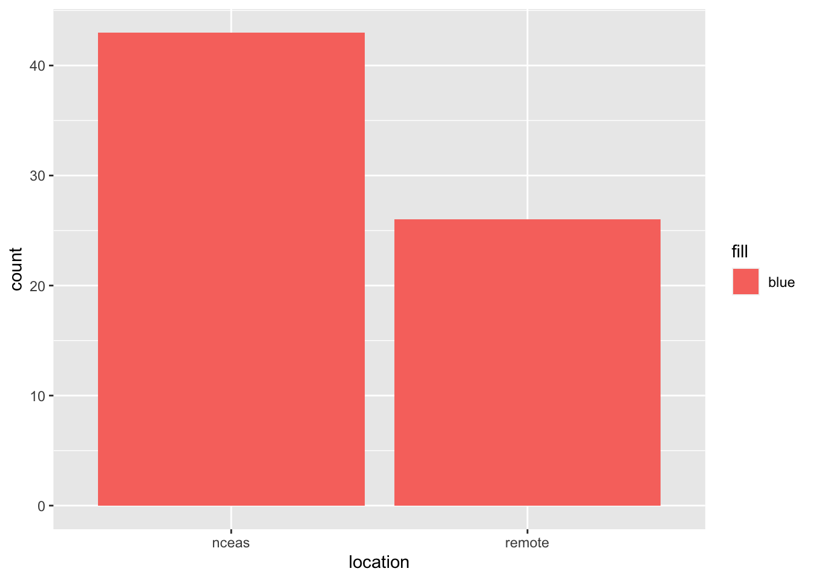
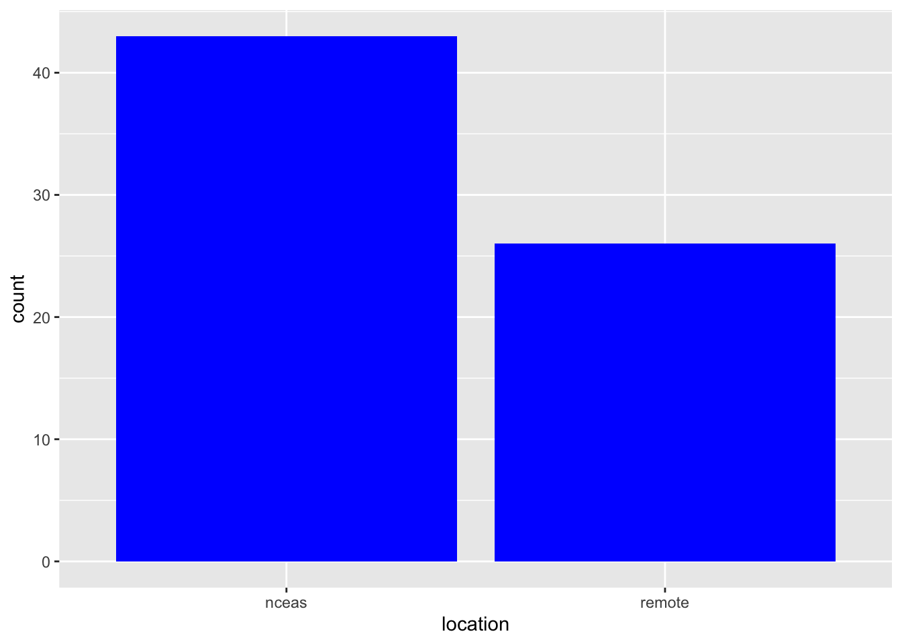
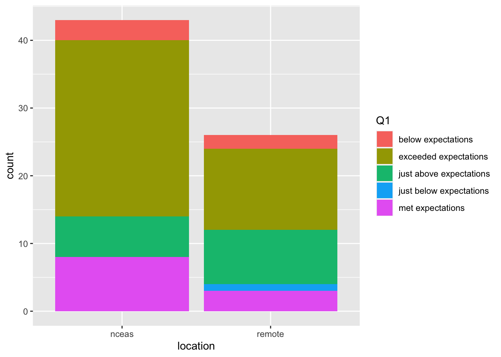
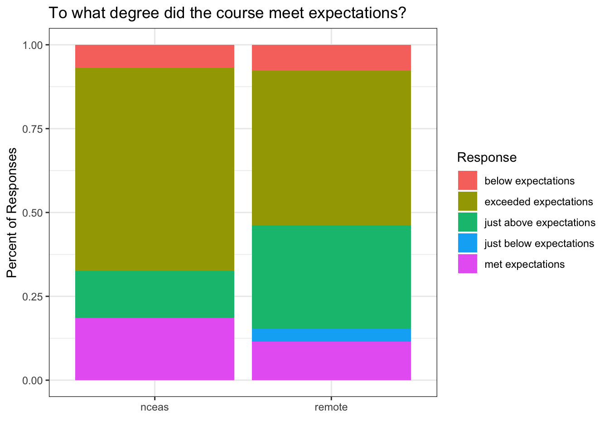
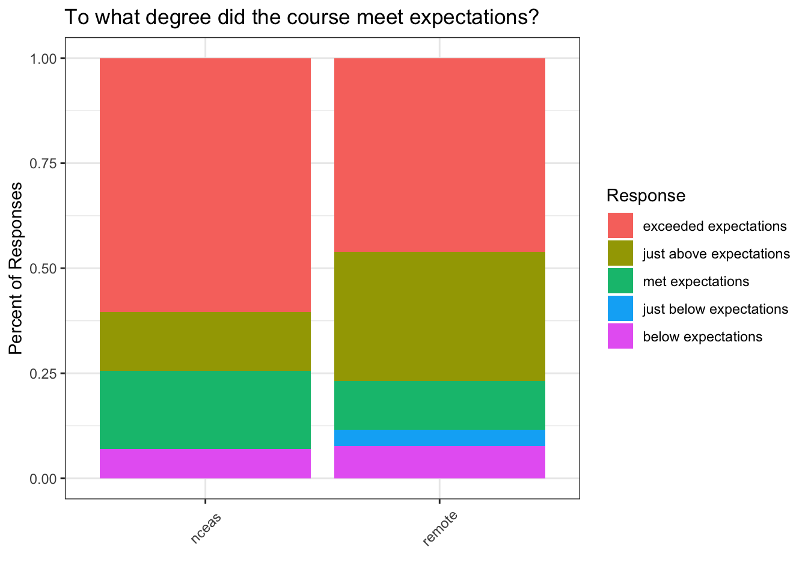

13 Data Visualization I
13.1 Publication Graphics
13.1.1 Learning Objectives
In this lesson, you will learn:
- The basics of the
ggplot2package to create static plots - How to use
ggplot2’s theming abilities to create publication-grade graphics
13.1.2 Overview
ggplot2 is a popular package for visualizing data in R. From the home page:
ggplot2 is a system for declaratively creating graphics, based on The Grammar of Graphics. You provide the data, tell ggplot2 how to map variables to aesthetics, what graphical primitives to use, and it takes care of the details. It’s been around for years and has pretty good documentation and tons of example code around the web (like on StackOverflow). This lesson will introduce you to the basic components of working with ggplot2.
ggplot vs base vs lattice vs XYZ…
R provides many ways to get your data into a plot. Three common ones are,
- “base graphics” (
plot(),hist(), etc`) - lattice
- ggplot2
All of them work! I use base graphics for simple, quick and dirty plots. I use ggplot2 for most everything else. ggplot2 excels at making complicated plots easy and easy plots simple enough.
Setup
Open a new RMarkdown document and remove the filler text.
First, let’s load the packages we’ll need:
library(dplyr)
library(tidyr)
library(ggplot2)
library(viridis)
library(scales)Let’s get set up to where we were at the end of the data tidying lesson. In that lesson, we walked through this chunk of code to read in our survey data, tidy it up, and join it to the events data.
survey_raw <- read_csv("https://dev.nceas.ucsb.edu/knb/d1/mn/v2/object/urn%3Auuid%3A71cb8d0d-70d5-4752-abcd-e3bcf7f14783", show_col_types = FALSE)
events <- read_csv("https://dev.nceas.ucsb.edu/knb/d1/mn/v2/object/urn%3Auuid%3A0a1dd2d8-e8db-4089-a176-1b557d6e2786", show_col_types = FALSE)survey_clean <- survey_raw %>%
select(-notes) %>%
mutate(Q1 = if_else(Q1 == "1", "below expectations", Q1)) %>%
mutate(Q2 = tolower(Q2))
survey_joined <- left_join(survey_clean, events, by = "StartDate")13.1.3 Static figures using ggplot2
Every graphic you make in ggplot2 will have at least one aesthetic and at least one geom (layer). The aesthetic maps your data to your geometry (layer). Your geometry specifies the type of plot we’re making (point, bar, etc.).
Now, let’s plot our results using ggplot. ggplot uses a mapping aesthetic (set using aes()) and a geometry to create your plot. Additional geometries/aesthetics and theme elements can be added to a ggplot object using +.
Let’s start by just plotting the answers to question 1. geom_bar will automatically count them for us.
ggplot(survey_joined, aes(x = location)) +
geom_bar()What if we want our bars to be blue instad of gray? You might think we could run this:
ggplot(survey_joined, aes(x = location, fill = "blue")) +
geom_bar()
Why did that happen?
Notice that we tried to set the fill color of the plot inside the mapping aesthetic call. What we have done, behind the scenes, is create a column filled with the word “blue” in our dataframe, and then mapped it to the fill aesthetic, which then chose the default fill color of red.
What we really wanted to do was just change the color of the bars. If we want do do that, we can call the color option in the geom_bar function, outside of the mapping aesthetics function call.
ggplot(survey_joined, aes(x = location)) +
geom_bar(fill = "blue")
What if we did want to map the color of the bars to a variable, such as location of the training.
ggplot is really powerful because we can easily get this plot to visualize more aspects of our data.
ggplot(survey_joined, aes(x = location, fill = Q1)) +
geom_bar()
If we want to make our bar chart show what percentage of repondents gave each answer, we can switch our bar chart by setting the position argument within geom_bar to fill.
ggplot(survey_joined, aes(x = location, fill = Q1)) +
geom_bar(position = "fill")Setting ggplot themes
Now let’s work on making this plot look a bit nicer. Add labels using the labs function, and include a built in theme using theme_bw(). There are a wide variety of built in themes in ggplot that help quickly set the look of the plot. Use the RStudio autocomplete theme_ <TAB> to view a list of theme functions.
ggplot(survey_joined, aes(x = location, fill = Q1)) +
geom_bar(position = "fill") +
labs(title = "To what degree did the course meet expectations?",
x = "",
y = "Percent of Responses",
fill = "Response") +
theme_bw()
You can see that the theme_bw() function changed a lot of the aspects of our plot! The background is white, the grid is a different color, etc. There are lots of other built in themes like this that come with the ggplot2 package.
Challenge
Use the RStudio autocomplete, the ggplot2 documentation, a cheatsheet, or good old google to find other built in themes. Pick out your favorite one and add it to your plot.
The built in theme functions change the default settings for many elements that can also be changed invididually using thetheme() function. The theme() function is a way to further fine-tune the look of your plot. This function takes MANY arguments (just have a look at ?theme). Luckily there are many great ggplot resources online so we don’t have to remember all of these, just google “ggplot cheatsheet” and find one you like.
Let’s look at an example of a theme call, where we change the rotation of the x axis tick labels.
ggplot(survey_joined, aes(x = location, fill = Q1)) +
geom_bar(position = "fill") +
labs(title = "To what degree did the course meet expectations?",
x = "",
y = "Percent of Responses",
fill = "Response") +
theme_bw() +
theme(axis.text.x = element_text(angle = 45, vjust = 0.5))
Note that the theme() call needs to come after any built in themes like theme_bw() are used. Otherwise, theme_bw() will likely override any theme elements that you changed using theme().
You can also save the result of a series of theme() function calls to an object to use on multiple plots. This prevents needing to copy paste the same lines over and over again!
my_theme <- theme_bw() +
theme(axis.text.x = element_text(angle = 45, vjust = 0.5))ggplot(survey_joined, aes(x = location, fill = Q1)) +
geom_bar(position = "fill") +
labs(title = "To what degree did the course meet expectations?",
x = "",
y = "Percent of Responses",
fill = "Response") +
my_themeOrdering our responses using factors
You might notice that our tick labels don’t appear in a very intuitive order. We would probably prefer to order these so that we have them in order of below, just below, met, just above, and exceeded. We can do this using factors. A factor in R is a class of data (like numeric or character) that represents data that contain a fixed and known set of values. Factors are often used in survey data, like the example we are using, as two of our four questions have a set of known values.
We can use the factor function to transform our character vector of Q1 responses into a factor, and the levels argument to order the levels. To do this, we will combine it with the mutate function call.
survey_joined <- survey_joined %>%
mutate(Q1 = factor(Q1, levels = c("exceeded expectations",
"just above expectations",
"met expectations",
"just below expectations",
"below expectations")))ggplot(survey_joined, aes(x = location, fill = Q1)) +
geom_bar(position = "fill") +
labs(title = "To what degree did the course meet expectations?",
x = "",
y = "Percent of Responses",
fill = "Response") +
my_theme
One last thing we might want to do is to set a nicer color palette. Here we use scale_fill_viridis from the viridis package. We can also add scale_y_continuous with the labels = percent argument to set the y tick labels in percent format.
ggplot(survey_joined, aes(x = location, fill = Q1)) +
geom_bar(position = "fill") +
scale_fill_viridis(discrete = TRUE) +
scale_y_continuous(labels = percent) +
labs(title = "To what degree did the course meet expectations?",
x = "",
y = "Percent of Responses",
fill = "Response") +
my_theme13.1.3.1 Saving plots
Saving plots using ggplot is easy! The ggsave function will save either the last plot you created, or any plot that you have saved to a variable. You can specify what output format you want, size, resolution, etc.
ggsave("question1.png", width = 3, height = 3, units = "in")Creating multiple plots
survey_long <- survey_joined %>%
pivot_longer(cols = starts_with("Q"), names_to = "id", values_to = "answer") %>%
filter(id %in% c("Q1", "Q2"))What if we wanted to generate a plot for every question with a controlled vocabulary? A fast way to do this uses the function facet_wrap(). This function takes a mapping to a variable using the syntax ~variable_name. The ~ (tilde) is a model operator which tells facet_wrap to model each unique value within variable_name to a facet in the plot.
The default behavior of facet wrap is to put all facets on the same x and y scale. You can use the scales argument to specify whether to allow different scales between facet plots. Here, we free the both scales.
Note that we have had to modify our axes from the previous plots. We now have answer on the y axis and fill as the location, since our answers have different answers.
ggplot(survey_long, aes(x = answer, fill = location)) +
geom_bar(position = "dodge") +
scale_fill_viridis(discrete = TRUE) +
labs(x = "", y = "Number of Responses", fill = "Location") +
facet_wrap(~id, scales = "free") +
my_theme13.1.4 Resources
- Lisa Charlotte Rost. (2018) Why not to use two axes, and what to use instead: The case against dual axis charts